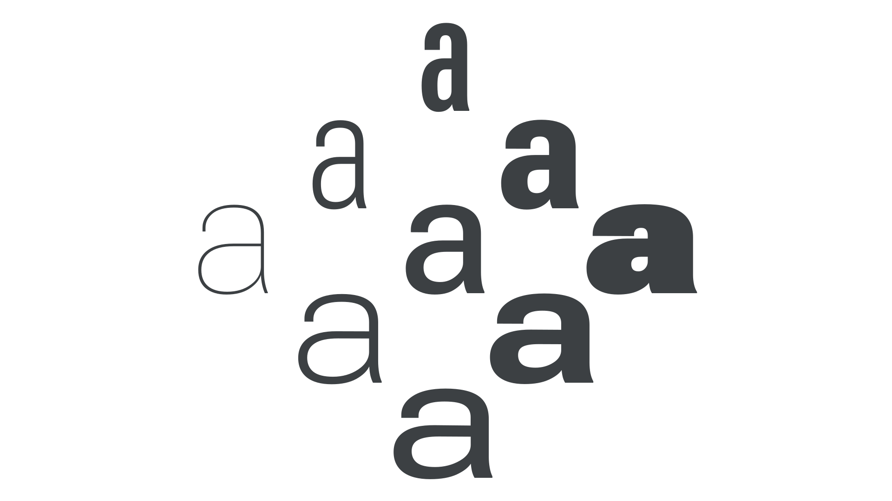

Designspace
By Google Fonts Knowledge contributors · Google Fonts Knowledge.
Original article · Source on GitHub · CC BY-SA 4.0. Text, illustrations and existing credits reproduced from the licensed Knowledge repository. Open Shelf adapted the layout and links; these adaptations are also CC BY-SA 4.0. No endorsement implied.
A designspace (sometimes written as “design space”) is a system specified during the type design process that controls how a variable font’s appearance changes, via interpolation from the master designs and glyph substitution, as its variation axes are adjusted.

Each variation axis can be conceived as a dimension in the font’s designspace, so each distinct set of axis values implies a unique location in the designspace, and each unique location results in a unique instance. For example, a variable font with Weight and Width axes has a two-dimensional designspace, containing all variants of Weight and Width. Some advanced variable fonts, such as parametric fonts, have 10 or more axes; therefore they have designspaces of 10 or more dimensions.